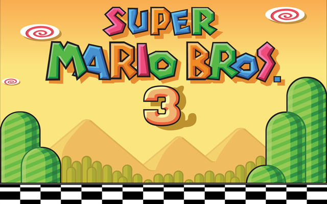

Blog Title One
The few tins of provisions we did take were mainly to serve as luxuries. For instance, we had quite a large supply of foie gras and larks in aspic.

Blog Title Two
The few tins of provisions we did take were mainly to serve as luxuries. For instance, we had quite a large supply of foie gras and larks in aspic. The few tins of provisions we did take were mainly to serve as luxuries. For instance, we had quite a large supply of foie gras and larks in aspic.

Blog Title Three
The few tins of provisions we did take were mainly to serve as luxuries. For instance, we had quite a large supply of foie gras and larks in aspic.